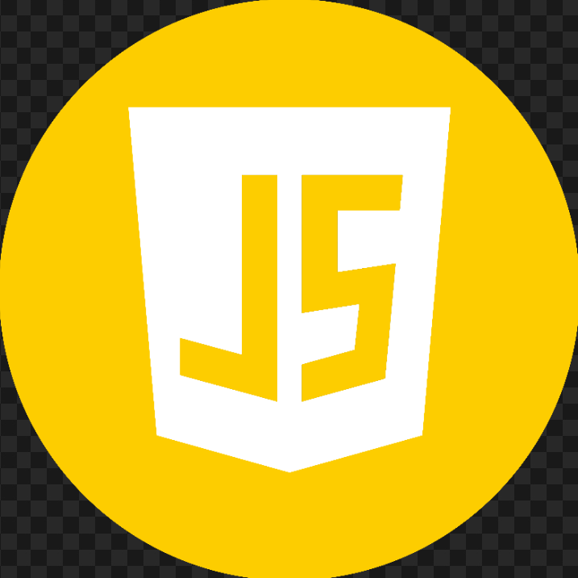
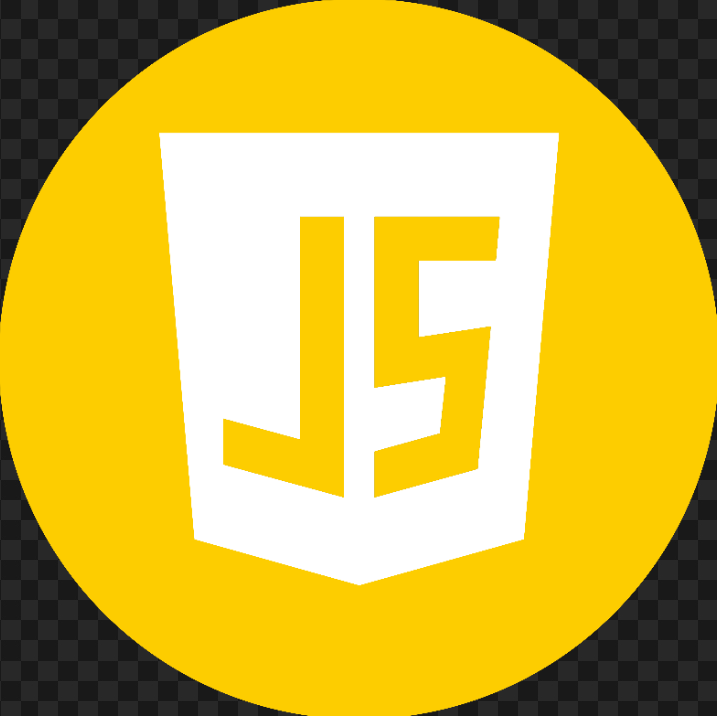

Skills
Minhas principais tecnologias são HTML, CSS e JavaScript. Abaixo
apresento uma estimativa do meu
nível de conhecimento em cada uma delas, com base nos projetos que desenvolvi até o momento.
Também possuo conhecimentos em outras linguagens e ferramentas, como Python, C++, Java, Git, GitHub
e MySQL.

 

Formação
Curso Superior de Tecnologia (CST), Análise e Desenvolvimento de Sistemas
Faculdade CDL
fev de 2022 - Jun de 2024
Pós-Graduação de Computação e Tecnologias da Informação e Comunicação (TIC), Desenvolvimento Web Full Stack
Universidade Pitágoras Unopar Anhanguera
Jun de 2025 - Dez de 2025
Cursos e Certificações
HTML5 e CSS3
Curso em Vídeo - Módulos 1 ao 5
Carga horária total: 200 horas (40h por módulo)
JavaScript
Curso em Vídeo
carga horária: 40 horas
Inteligência Artificial e o Novo Contexto da Cultura Digital
Fundação Bradesco
carga horária: 20 horas
Linguagem de Programação Python - Básico
Fundação Bradesco
carga horária: 18 horas
Fundamentos TI: Hardware e Software
Fundação Bradesco
carga horária: 7 horas
Inglês Básico
Fortaleza Bilíngue
carga horária: 48 horas
Projetos

Fast Furious - Catálogo de Carros
Projeto desenvolvido utilizando HTML, CSS e JavaScript, com o objetivo de criar um catálogo de carros com um tema bem chamativo.
Saiba mais...
O projeto apresenta uma interface moderna, responsiva e criativa, permitindo aos usuários navegar por diferentes modelos de carros da saga de velozes e furiosos.
Grounded - Entretenimento
Projeto web desenvolvido com HTML e CSS que apresenta o jogo Grounded, um título de sobrevivência coop, com muitos desafios.
Saiba mais...
Foi meu primeiro projeto. O site contém informações gerais sobre o mundo do jogo, sua mecânica de exploração, sobrevivência e cooperação com até três amigos, além de links para acompanhar mais sobre o jogo e acessar a página oficial e loja. Criado como prática de front-end, o projeto demonstra organização visual, conteúdo claro e foco em apresentar uma experiência envolvente para fãs do gênero de jogos de sobrevivência.
Estude – Incentivo
Projeto web desenvolvido com HTML e CSS com o objetivo de incentivar e motivar o hábito do estudo, a disciplina e a persistência.
Saiba mais...
O site apresenta mensagens motivacionais voltadas para estudantes e pessoas em busca de desenvolvimento pessoal, reforçando a importância do foco, da constância e do esforço diário para alcançar objetivos acadêmicos e profissionais. Com um layout simples e direto, o projeto foi criado como prática de front-end e também como uma forma de transmitir motivação e inspiração por meio da tecnologia.
Controle de gastos
Projeto web desenvolvido com HTML, CSS e JavaScript, criado a partir da necessidade de obter maior controle financeiro.
Saiba mais...
Controle de Gastos é uma aplicação web desenvolvida para ajudar o usuário a registrar e monitorar suas finanças pessoais de forma simples e prática. Com ela, é possível adicionar entradas e saídas de valores, visualizar o total de receitas, despesas e o saldo geral em tempo real.